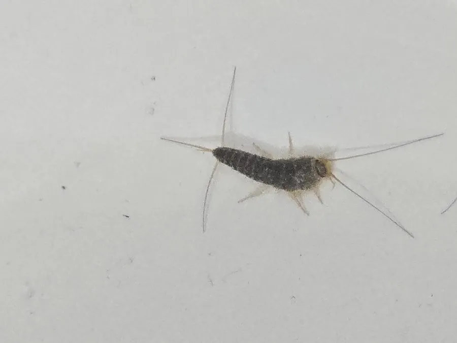

昆虫 · 动物界
毛衣鱼 Ctenolepisma longicaudata

身体银灰色、覆有鳞片、尾端有三根长须的无翅小昆虫，常藏在衣柜和书柜中啃食纸张与衣物，俗称蠹鱼。
- 分类
- 门节肢动物门纲昆虫纲目衣鱼目科衣鱼科属栉衣鱼属
- 栖息环境
- 衣柜、书柜、墙缝和地板下等温暖阴暗潮湿处
- 地理分布
- 全球广泛分布，中国各地室内均有记录
- 保护级别
- IUCN 暂无评估；中国未列入国家重点保护名录
物种志
毛衣鱼体长约 1–1.5 cm，身体扁平细长，呈银灰色，表面覆盖细鳞，头部有两根长触角，腹部末端有三根细长的尾须，外形像一条小鱼，因此得名。它没有翅，靠快速爬行活动，蜕皮数次后逐渐长大，寿命可达数年，是室内常见的小型无翅昆虫。
毛衣鱼喜欢温暖、阴暗、潮湿的环境，常见于衣柜、书柜、墙缝和地板下，取食纸张、书籍装订的糨糊、棉麻衣物、谷物和真菌，因而被视为家庭害虫。它白天躲藏，夜间活动，行动敏捷，遇到光线会迅速逃窜；在干燥环境中难以长期生存，保持室内通风干燥是防治关键。毛衣鱼分布遍及全球，在中国各地均有记录，对温湿度的变化很敏感，目前尚无保护评估。
形态与习性
- 食性纸张、糨糊、棉麻衣物、谷物和真菌
- 体长约 1–1.5 cm
- 识别体覆银灰色鳞片，尾端有三根长须
- 习性昼伏夜出，行动敏捷，怕光
- 危害啃食书籍和衣物，属家庭害虫
- 防治保持室内通风干燥，减少阴暗潮湿角落
趣味知识
- 毛衣鱼尾部有三根长须，加上银灰色的身体，游动时像一尾小鱼。
- 它没有翅膀，靠快速爬行躲避光线，是典型的夜行性昆虫。
- 毛衣鱼能消化纸张和衣物中的纤维素，因此常把书本啃出小洞。